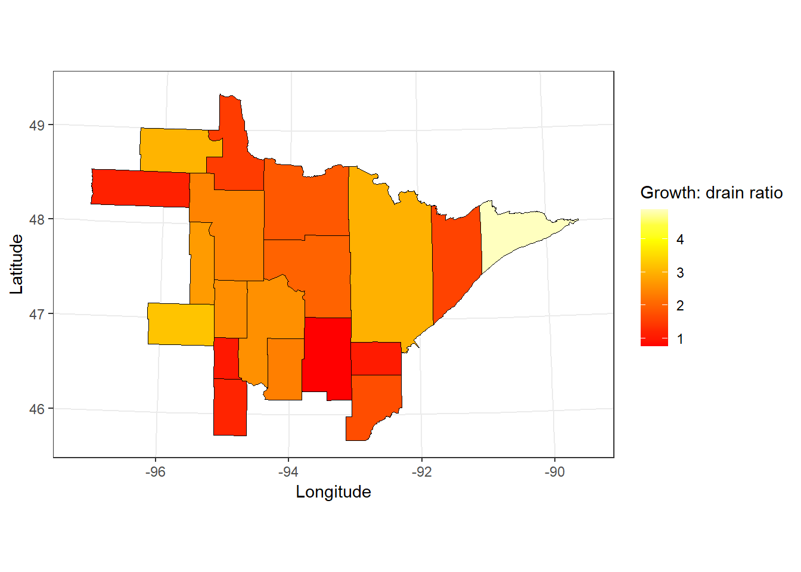

| Ownership | Num plots (growth) | Net growth (US tons) | Num plots (removals) | Removals (US tons) | Growth: drain ratio |
|---|---|---|---|---|---|
| National Forest | 628 | 1,808,947 | 42 | 520,043 | 3.48 |
| State | 1,331 | 2,795,066 | 127 | 1,841,482 | 1.52 |
| County and Municipal | 919 | 2,597,581 | 93 | 1,486,456 | 1.75 |
| Private | 2,746 | 7,732,836 | 250 | 2,109,489 | 3.67 |
Calculating growth-to-drain ratios from forest inventory data
Forest growth
growth and yield
forest measurements
There’s no better way to understand harvest sustainability across a region than to calculate the growth/drain ratio.
One of the most effective metrics to assess the sustainability of harvesting practices in a forest region is the growth/drain ratio. It is calculated by dividing the growth of a forest attribute by the amount removed through harvests, i.e., “drained”. The same units, geographic area, and time period (e.g., annual) are required to make the calculation.
A growth/drain ratio of 1 indicates harvest removals equal to forest growth, i.e., a sustainable harvest level is reached. A growth/drain ratio greater than 1 indicates forest growth that exceeds harvest levels, and a ratio less than 1 indicates harvests that exceed growth. (Not sustainable in the long term.) For example, a growth/drain ratio of 1.5 indicates 1.5 times as much volume/biomass would grow over a time period than was harvested.
Net growth is commonly used when calculating growth/drain ratios, as it represents forest growth over a specified growth period after deducting mortality. Removals are commonly measured as forest volume or biomass and are expressed in the same units and time period as growth.
As a case study, consider the US state of Minnesota. The Forest Inventory and Analysis program of the USDA Forest Service has been collecting information across thousands of plots in Minnesota forests, so we have data to determine growth/drain ratios for a variety of conditions across the state.
For units, we’ll use the average annual net growth and removals of aboveground tree biomass (all trees at least 1-inch in diameter). Data were collected from 2018 through 2022.
Say we’re interested in the four primary ownerships within the state. Harvests removals generally occurred on less than 10% of all plots, with growth/drain ratios ranging from 1.52 on State-owned lands to 3.67 on private ownerships:
Ratios indicate growth exceeded removals over this time period, in particular on private lands and National Forests. Forestry professionals from outside the region might be surprised to see that growth/drain ratios on public lands are lower than on private lands. (Opposite trends exist in the southeastern US). Publicly-owned forests managed by the state and counties are some of the most intensively-managed ones in Minnesota.
We can also visualize growth/drain ratios by county to see geographic differences. The following map is limited to counties that showed a minimum of nine harvest events occurring in the county (all which are located in the northeastern region of the state). Counties in red show a growth/drain ratio closer to 1:

We can see that growth drain ratios ranged from 0.77 (Aitkin County) to 4.89 (Cook County):
| County | Num plots (growth) | Net growth (US tons) | Num plots (removals) | Removals (US tons) | Growth: drain ratio |
|---|---|---|---|---|---|
| Aitkin | 275 | 399,874 | 31 | 518,620 | 0.77 |
| Becker | 105 | 270,062 | 17 | 83,690 | 3.23 |
| Beltrami | 336 | 713,885 | 30 | 296,053 | 2.41 |
| Carlton | 108 | 201,626 | 9 | 190,187 | 1.06 |
| Cass | 291 | 821,138 | 29 | 319,851 | 2.57 |
| Clearwater | 107 | 316,782 | 10 | 116,938 | 2.71 |
| Cook | 211 | 651,677 | 16 | 133,276 | 4.89 |
| Crow Wing | 131 | 405,563 | 15 | 172,040 | 2.36 |
| Hubbard | 142 | 366,910 | 21 | 143,663 | 2.55 |
| Itasca | 456 | 1,623,600 | 52 | 811,335 | 2.00 |
| Koochiching | 529 | 1,445,124 | 52 | 777,891 | 1.86 |
| Lake | 307 | 552,425 | 29 | 347,135 | 1.59 |
| Lake of the Woods | 175 | 280,306 | 14 | 188,592 | 1.49 |
| Marshall | 53 | 114,869 | 10 | 98,719 | 1.16 |
| Pine | 174 | 558,473 | 23 | 322,901 | 1.73 |
| Roseau | 84 | 194,523 | 10 | 64,138 | 3.03 |
| St. Louis | 948 | 2,978,435 | 80 | 993,374 | 3.00 |
| Todd | 59 | 134,662 | 10 | 109,357 | 1.23 |
| Wadena | 43 | 139,016 | 10 | 137,567 | 1.01 |
A caveat with the growth/drain ratio is how it can be sensitive to imbalances in age class distributions. For example, growth/drain ratios may be lower if a large portion of the resource is at or near a typical age for management (e.g., a rotation age). Growth/drain ratios may be greater if fewer acres are available to be harvested, and those stands may be younger with greater growth rates. Despite this, use the growth/drain ratio to get a sense of the harvest practices in your own region.
For the R code used to access these data and produce these figures using FIA’s EVALIDator API, see here
–
By Matt Russell. For more, subscribe to my monthly email newsletter to stay ahead on data and analytics trends in the forest products industry.